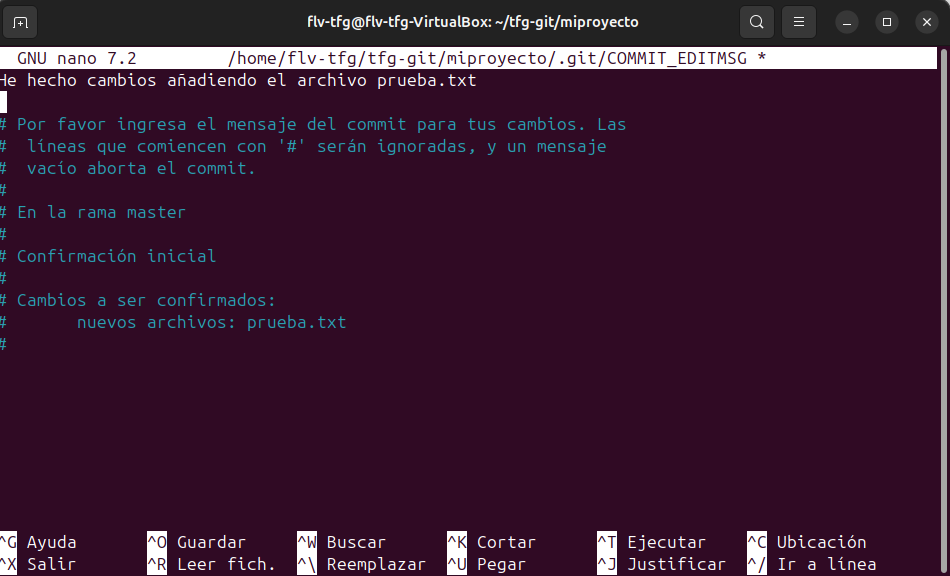
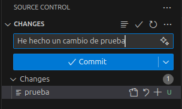
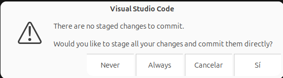

git commitEl comando git commit se utiliza para guardar los cambios que has preparado en el historial del repositorio (con git add), que posteriormente se subiran con "push".
Podemos hacer el commit añadiendo el mensaje en el mismo commit o con "nano". La primera forma, y la más directa sería de la siguiente forma:
git commit -m "mensaje que queremos poner a la hora de subir los cambios" (Las comillas se han de poner también)

Otra forma es poniendo solamente:
git commit
Pero nos saldrá el editor de texto predeterminado, que es "nano". En blanco se puede ver el texto que se ha escrito, que es (esencialmente) lo mismo que habíamos puesto antes con git commit -m.Para guardar y salir hemos de hacer ctrl + o y después ctrl + x, así el mensaje quedará guardado a la hora de subirlo. Siempre hay que poner mensaje.
En la ventana de control de git dentro de vscode, escribiriamos el mensaje del commit y le daríamos a commit.

En este mensaje simplemente hacemos click en Si.AUN NO SE HA SUBIDO NADA YA QUE NO SE HA REALIZADO PUSH (O SYNCH CHANGES)